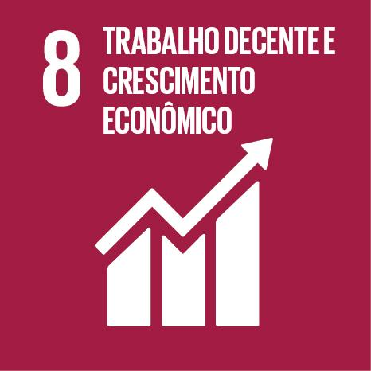

promover o crescimento económico, inclusivo e sustentável.
A ODS 8 (Objetivo de Desenvolvimento Sustentável 8) busca promover o crescimento econômico sustentável, o emprego pleno e produtivo, e o trabalho decente para todos. Ela incentiva a inovação, o empreendedorismo e condições de trabalho dignas, com foco na inclusão e na redução das desigualdades no mercado de trabalho.
Os principais desafios atuais da ODS 8 incluem o alto desemprego, especialmente entre jovens e mulheres, a informalidade no trabalho, a exploração laboral e a desigualdade de acesso a oportunidades. Além disso, a recuperação econômica pós-pandemia tem sido lenta em muitos países, dificultando a criação de empregos dignos e sustentáveis.